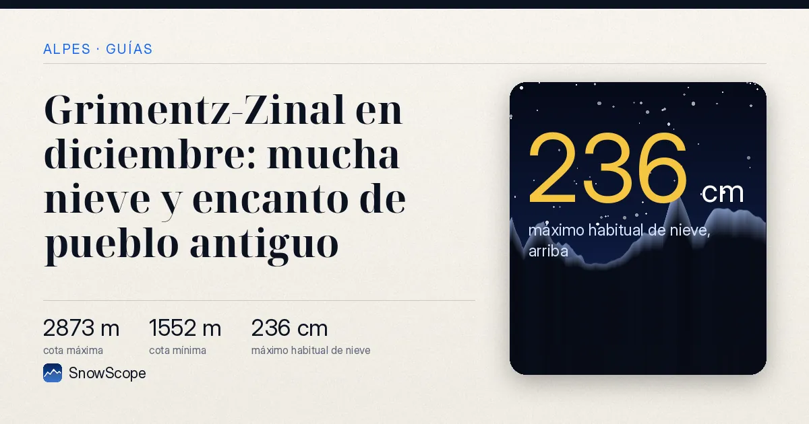

Grimentz-Zinal en diciembre: mucha nieve y encanto de pueblo antiguo
Grimentz y Zinal son dos pueblos históricos conectados por un teleférico para formar una sola estación de esquí. Si buscas un viaje económico en diciembre de 2026, este destino suizo ofrece una combinación de fiabilidad en altitud y ambiente tradicional.
Consulta la previsión de nieve en tiempo real de Grimentz-Zinal en la app SnowScopeEspesor de nieve, alertas de nieve polvo y mapa 3D, gratis.
Dos pueblos, una estación de esquí
La estación de esquí mapeada cuenta con 71 km de pistas y 23 remontes mapeados. Puedes moverte entre los dos pueblos fácilmente usando el sistema de teleféricos. Los remontes alcanzan un punto máximo de 2873 m, mientras que el remonte más bajo se sitúa a 1552 m. Esto te da un desnivel de 1321 m para explorar.

Grosor en diciembre por semana
Nuestro historial de nieve de 46 inviernos pasados muestra que la nieve en la base de los remontes suele ser escasa a principios de diciembre. En un diciembre habitual, la base tiene 27 cm de nieve. Sin embargo, la proporción de inviernos con 30 cm o más en la base aumenta a medida que avanza el mes, subiendo del 17 % en la primera semana al 63 % en la última semana de diciembre.
A media montaña, a 2212 m, las condiciones son más constantes. El grosor habitual en diciembre es de 44 cm. En el 85 % de los inviernos pasados, encontrarás 30 cm o más de nieve entre el 15 y el 21 de diciembre. En la parte alta de los remontes, a 2873 m, la nieve es muy fiable. En el 100 % de los inviernos pasados, hay 30 cm o más de nieve a mediados de mes.
Mirando las tendencias a largo plazo, la media de diciembre en la parte alta fue de 99 cm en los primeros 15 inviernos, de 1980-81 a 1994-95, y de 92 cm en los últimos 15 inviernos, de 2011-12 a 2025-26. También vemos que el diciembre con menos nieve registrado en la parte alta fue de 34 cm en la temporada 2015-16, mientras que el más nevado fue de 175 cm en 1982-83.
Precio del forfait
Puedes comprar un forfait de 1 día para adultos de Val d'Anniviers por CHF 75,00. Si planeas quedarte más tiempo, un forfait de 6 días para adultos de Val d'Anniviers cuesta CHF 339,00. Estos precios son válidos para la temporada de invierno 2026-27 e incluyen Grimentz-Zinal, St-Luc Chandolin y Vercorin.
Grimentz-Zinal frente a St-Luc Chandolin
Al comparar ambas, St-Luc Chandolin tiene una estación de esquí mapeada con 56 km de pistas y 18 remontes mapeados. Su remonte más alto está a 2973 m, lo cual es más alto que la cima de 2873 m en Grimentz-Zinal. El grosor habitual en diciembre en la cima de St-Luc Chandolin es de 110 cm, en comparación con los 99 cm de Grimentz-Zinal.
En la base, St-Luc Chandolin se encuentra a 1682 m y tiene un grosor habitual en diciembre de 38 cm. La base de Grimentz-Zinal es más baja, a 1552 m, lo que explica por qué la nieve es más escasa allí a principios de mes. Ambas estaciones comparten el mismo precio para el forfait de Val d'Anniviers.
Quién debería elegirlo en diciembre
Grimentz-Zinal es una buena opción si te gusta esquiar en gran altitud donde la nieve es más fiable. A fecha de 13 de noviembre de 2026, la nieve actual es de 0 cm en la base, 1 cm a media montaña y 1 cm en la parte alta. Las previsiones de nieve nueva para dos semanas en media montaña y por encima predicen un rango de 63 cm a 108 cm, con un valor medio de 86 cm.
Si viajas a principios de diciembre, concentra tu tiempo en las partes altas de la montaña. Las pistas más bajas son más adecuadas para las semanas más cercanas al final del mes, cuando la base de nieve ha tenido más tiempo para acumularse.
Consejos para esquiadores
- Visita durante la última semana de diciembre para tener la mejor probabilidad de encontrar 30 cm o más de nieve en la base de los remontes.
- Pasa tu tiempo en la parte alta de los remontes, a 2873 m, donde la nieve es fiable incluso en años escasos.
- Consulta el boletín de avalanches antes de esquiar fuera de pista, ya que las condiciones cambian rápidamente en las zonas de gran altitud.
- Reserva tu forfait de 6 días de Val d'Anniviers en la página web oficial para preparar tu viaje.
Más mapas (sitios externos)
Referencias y créditos
- Val d'Anniviers tourism, official ski pass prices 2026-27 www.valdanniviers.ch/fr/Z33617/tarifs-ski-grimentz-zinal
- SnowScope, December snow at three heights and today's snow map snowscope.app/
Sobre estas cifras
Cifras de nieve: histórico de nieve de SnowScope, 46 inviernos pasados (1980-81 a 2025-26) a tres alturas de cada estación (un modelo del pasado corregido por altitud: una estimación para una zona, no mediciones de la estación); cifras de diciembre calculadas con los espesores diarios de esos inviernos. Nieve actual y tendencia a dos semanas: previsiones de SnowScope (tendencia de ECMWF y GFS, un rango, no una promesa). Remontes y pistas: cartografía de OpenSkiMap. Precios: las páginas oficiales de abajo, consultadas el 2026-11-13; los precios pueden cambiar, compruébalos antes de reservar.
Boletines oficiales de aludes: SLF – WSL Institute for Snow and Avalanche Research
Citar este informe
Para investigación, docencia o prensa: cifras y gráficos reutilizables libremente bajo CC BY 4.0 con esta cita.
SnowScope (2026), Grimentz-Zinal en diciembre: mucha nieve y encanto de pueblo antiguo, https://snowscope.app/blog/es/2026/11/grimentz-zinal-december-ski-snow-and-cost-2026.html, consultado el 2026-11-14
SnowScope (Atlas Labs). (2026, November 14). Grimentz-Zinal en diciembre: mucha nieve y encanto de pueblo antiguo. SnowScope snow reports. https://snowscope.app/blog/es/2026/11/grimentz-zinal-december-ski-snow-and-cost-2026.html
BibTeX
@misc{snowscope2026grimentzzinaldecemberski,
author = {{SnowScope (Atlas Labs)}},
title = {Grimentz-Zinal en diciembre: mucha nieve y encanto de pueblo antiguo},
year = {2026},
month = nov,
howpublished = {\url{https://snowscope.app/blog/es/2026/11/grimentz-zinal-december-ski-snow-and-cost-2026.html}},
note = {Published 2026-11-14 13:31 UTC; accessed 2026-11-14}
}· CC BY 4.0 · Métodos, datos y herramientas →
Grimentz-Zinal: nieve y temperatura según la altura, este invierno vs el pasado (herramientas) →
Sigue Grimentz-Zinal
Gratis: un aviso cuando llega la nieve y la previsión cada mañana.